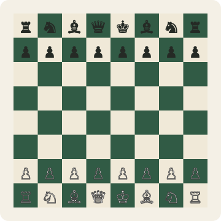

Get comfortable with the board, understand how each piece works, and learn the rules that make every game possible.
01BEGINNER
Board setup and orientation
A chessboard has 64 squares arranged in an 8-by-8 grid. Each player starts with 16 pieces. When setting up the board, remember: the light square belongs on each player's right-hand corner.

Remember the back rank
From White's left to right: rook, knight, bishop, queen, king, bishop, knight, rook. The queen starts on her own color: White queen on a light square, Black queen on a dark square.
White moves first. Files are labeled a–h and ranks 1–8.
02BEGINNER
How the pieces move
♔
King
Moves one square in any direction. The king may never move into check.
♕
Queen
Moves any number of squares horizontally, vertically, or diagonally.
♖
Rook
Moves any number of squares along a rank or file.
♗
Bishop
Moves any number of squares diagonally and stays on its starting color.
♘
Knight
Moves in an L shape: two squares in one direction and one perpendicular. It can jump over pieces.
♙
Pawn
Moves forward one square, or two from its starting square. It captures one square diagonally forward.
03BEGINNER
Captures and special moves
Castling
Castling moves the king two squares toward a rook, then places that rook on the square the king crossed. It is allowed only if neither piece has moved, the squares between them are empty, the king is not in check, and the king does not cross or land on an attacked square.
En passant
If a pawn advances two squares from its starting square and lands beside an opposing pawn, that pawn may capture it as if it had moved only one square. This capture must be made immediately on the next move.
Pawn promotion
When a pawn reaches the farthest rank, it must be promoted to a queen, rook, bishop, or knight of the same color. Promotion is not limited to pieces that have already been captured.
04BEGINNER
Check, checkmate, and stalemate
Check means the king is under attack. The player must respond by moving the king, capturing the attacking piece, or blocking the attack when possible.
Checkmate occurs when the king is in check and there is no legal move that removes the threat. The game ends immediately.
Stalemate occurs when a player is not in check but has no legal moves. The game is a draw.
Quick knowledge check
What is the result when a player has no legal moves but their king is not in check?